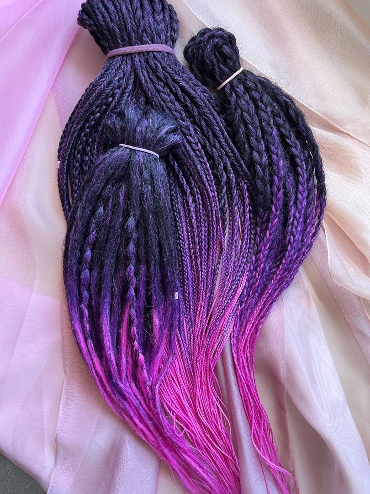
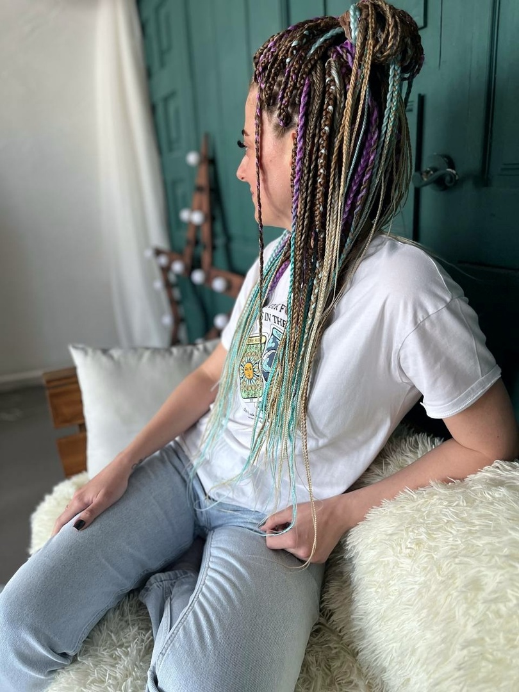
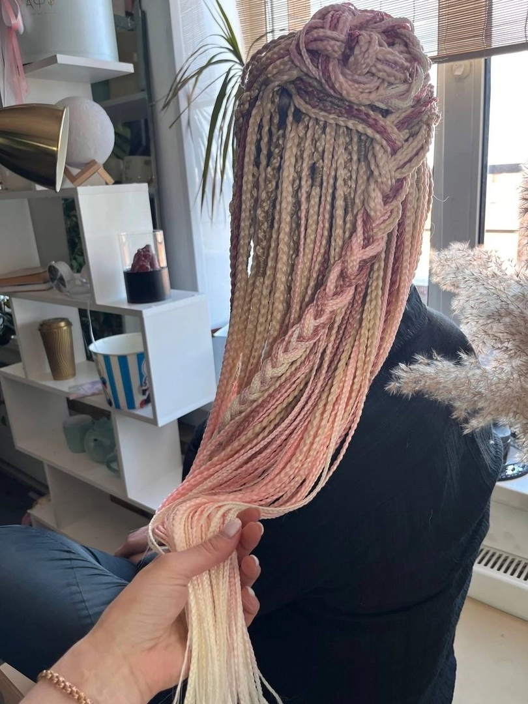
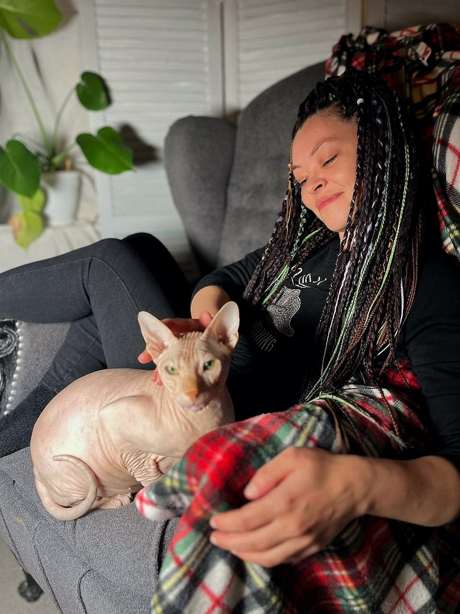
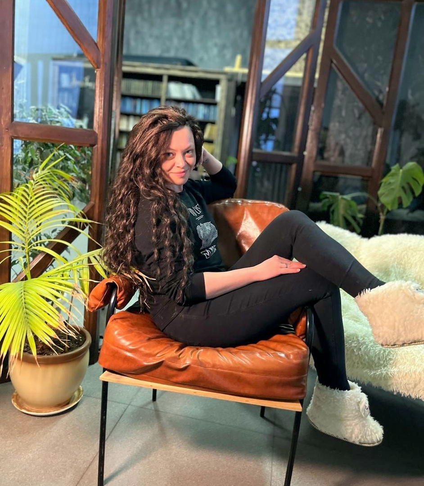

До курса Анастасия Староверова, брейдер из Тольятти, зарабатывала около 25-30 тыс. рублей в месяц, имея нерегулярную занятость и небольшое количество клиентов. После перехода в VK и внесения небольших изменений в свою группу, доход увеличился в 1,5-2 раза, и клиенты стали записываться на несколько недель вперед.
После курса ее доход вырост до 700 000 тысяч в год.
Мы взяли у нее короткое интервью:
— Расскажи, что было до курса, какой средний доход был в месяц? Сколько клиентов?
— Полностью перешла в ВК весной 2022 года, раньше он у меня был чисто для музыки и общения с друзьями/знакомыми в чатиках. А как продающую площадку и её инструменты, ВК не знала и не понимала вообще.
Правда, была уже очень старая и, настолько же заброшенная, группа, которую просто "причесала" по уже имеющимся знаниям о маркетинге – оформила альбомы с работами и отзывами, поставила фотки везде привлекательные, пошаманила над описанием и услугами, начала писать хоть какие-нибудь посты и на личной странице, и в группе. От этих действий проснулись клиенты, которые уже были когда-то в студии, и прибавились новички – видимо, из-за возросшей активности "старичков" и того, что я вообще начала тут проявляться, начали нас видеть органически.
Честно говоря, ни разу так нормально и не посчитала ни количество клиентов, ни количество денег. Но до перехода в ВК и того, и другого было ощутимо меньше. Бывало, совсем без работы сидела, бывали наплывы на несколько недель вперёд, но постоянства не было.
Ну, если приблизительно, то 25-30к в месяц в лучшем случае получалось зарабатывать. После перехода и первых мелких изменений заработок стал +/- раза в 1,5-2 больше и более стабильным, клиенты пошли и ко мне лично за комплектами кос, дред, локонов, и в студию на услуги вплетения/расплетения афропричёсок.
Записи были на каждый день на 2-6 недель вперёд, иногда даже приходилось упахиваться и дедлайны прям горели. В тот момент это казалось потолком по деньгам и возможностям, хотя хотелось, конечно, бОльшего.
К сентябрю 2022 я где-то наткнулась на твою рекламу, зашла в группу, почитала, посмотрела, очень всё откликнулось – стиль общения, подача, качество информации. Потом увидела что-то про бесплатную движуху по продвижению на целый месяц и сразу решила, что мне надо. Ибо чётко понимала, что с ВК ещё сильно на "вы" и туплю, как тут применять те знания по маркетингу и продажам, которые у меня уже есть. Весь ноябрь мы учились, весь декабрь я думала про курс, но не решалась пойти – опыт "то пусто, то густо" всё-таки ещё не забылся и давил, не была уверена, что смогу, как оплатить, так и пройти.
В итоге всё же решилась и 2 января 2023 бодро запрыгнула в ВК-бабло. Настолько уже хотелось начать изучать нормально инструменты этой соцсети, что даже посленовогодние салаты не лезли)

— Какие сложности были во время обучения на нашем курсе? На сколько сложно было учиться? За сколько прошла обучение?
— Мы как-то смеялись, что моим главным страхом был, что вот щас клиенты как попрут и мы тупо не справимся ни с количеством работы, ни с количеством денег, ни с количеством ответственности.
Меня этот момент, наверное, больше всего тормозил и я даже ловила где-то урока до 16 дикое сопротивление что-то делать. Хотя всё равно шла довольно активно по обучению, если не постоянно в действия конкретно в ВК (хотя их тоже делала, конечно. В первую очередь, выписала наконец-то все мысли по ЦА и пипецам из головы в заметки, полностью настроила личку и группу по урокам), то хотя бы в написание себе огромного количества идей для продвижения на будущее.
У меня уже был довольно крупный опыт в смм и продвижении чужих бизнесов, но я, в основном, занималась созданием контента (фото, видео, тексты) и исключительно в нельзяграме. Поэтому сложно не было, было очень удивительно проходить уроки и понимать, что как же, блин, оказывается, много очевидных и мега-полезных вещей можно так просто объяснить и как, даже опытный в плане продвижения человек, может их тупо не замечать – то глаз "замылился", то синдром самозванца мешает, то просто сидишь тупишь и не видишь действенные инструменты, а они вот, прям на поверхности и без кучи денежных вложений могут работать.
Прошла курс окончательно, по-моему, к середине мая 2023.
Это получается за 4,5 месяца. Правда, был перерыв в месяц-полтора где-то с конца февраля – всё время было плотно занято работой по заказам.
— Как думаешь, с куратором было бы проще, легче, понятней?
— Думаю, в моём случае, было бы быстрее. Я думала про тариф с куратором, чтобы иметь от него подтверждение, что двигаюсь в правильном направлении, или получать периодически нужные пендели, меня такие штуки подстёгивают и воодушевляют, ну и самозванец опять же иногда накатывает. Потом всё-таки придушила его и поняла, что смогу сама и лично мне, возможно, так будет даже полезней – взялась, так делай давай, Настя, а не жди, что кто-то тебя тащить будет и сопли подтирать.
А вообще, поддержка куратора, особенно для новичков в теме продвижения – это большой плюс. Опытный наставник всегда подскажет, более подробно объяснит какие-то вещи в моменты затыков или расскажет, где в уроках стоит быть повнимательнее, направит по нужному пути, если куда-то не туда начинаешь сворачивать, идеями поделится – от этого и своих может больше возникнуть. Плюс другой, дополнительный, взгляд со стороны на одну и ту же тему очень полезен.
Поэтому совсем новичкам или тем, кто сомневается в самостоятельном прохождении, я бы, конечно, посоветовала проходить курс с куратором.
— Какие сейчас действия делаешь для привлечения клиентов? Как часто пишешь посты? Запускаешь ли рекламу?
— Со 2 ноября 2023 я, можно сказать, начала всё с нуля, потому что окончательно поняла, что мне стало тесно – я могу больше, выше, сильнее. Хочу работать и продвигаться не только по Тольятти, а на всю Россию. И хочу с головой уйти в создание под заказ аксессуаров для волос и комплектов для заплетений из косичек, дред и кудрей.
Взяла себя в лапы, села и по всем заветам курса ВК Бабло настроила абсолютно новую группу лично для себя и своего дела. Коллективный мозгоштурм с вами тоже ооочень помог – я окончательно определилась с основным продуктом, а там, как по маслу, к нему всё подтянулось – сегменты ЦА, описание группы, "двери" и т.д.
Поэтому сейчас могу разложить всё по полочкам за прошедший год:

- 2 ноября 2023 в группе было 2 подписчика - я и муж.
- Сегодня там 231 человек. Не так уж и много, да? Зато я точно знаю, что они на 100% целевые – мои постоянные клиенты, друзья и знакомые, которые у меня плетутся и заказывают аксессуары для себя или в подарок другим девчонкам (дочкам, племяшкам, мамам, сестрам, коллегам на работе и т.д.), друзья друзей, которые пришли по сарафанке и уже задумываются о покупках, консультируются насчёт заказов.
- Легко вышла на работу по всей РФ и даже чуть за её пределы. Комплекты и аксессуары моего изготовления живут в Москве, Питере, Перми, Екатеринбурге, в Сербии, Самаре и в Тольятти, конечно, где живу я сама.
С личной страницы регулярно отправляю заявки на дружбу людям, которые кажутся мне потенциальной целевой аудиторией. В большинстве случаев меня добавляют в друзья в ответ, а через некоторое время прогреваются и на покупки.
Посты пишу, как кот лапой ляжет – то месяц ничего, то по одному-два поста в неделю могу настрочить. Причём это не обязательно посты о работе или какие-то продающие тексты, личное тоже хорошо заходит, меня видят, а от этого и клиенты появляются.
Каждый месяц стабильно прилетает где-то 6 заказов от постоянников и работающей сарафанки , и ещё 3-4 заказа с постов, если я что-то более менее выкладываю.
В деньгах это 30 000 – 55 000р, средняя зарплата моего региона за месяц, а у меня при этом очень лайтовый режим работы. Это суммы уже с вычетом расходов, кстати – на материал, украшения, упаковку, доставку до покупателя и т.д.

Если хочу побольше заработать – становлюсь более активной в ВК, делаю всё по курсу и клиентов не приходится долго ждать. На праздники и в летний сезон вообще всегда ажиотаж – все хотят иметь шикарную причёску на Новый год, День Влюбленных, 8 марта или в долгожданном отпуске на морях.
В общем, из-за всего этого рекламу я совсем не запускаю, мне заказов достаточно и я знаю, как без сильных денежных вливаний заработать ещё больше, при желании.
Так что движемся, господа)
— А можешь поделиться, как изменилась жизнь, когда увеличился доход? Может что-то купила себе? Съездила в путешествие? Что-то смогла сделать, чего раньше не могла позволить себе?)
— Однозначно, стало спокойнее жить. Я не думаю, например, смогу ли купить что-то сыну по дороге из школы домой, если он вдруг попросит. Просто знаю – смогу, есть деньги на карте. А с помощью уроков Клуба ремесленников, кстати, я ещё и финансовую грамотность повысила, поэтому получилось скопить денежную «подушку» на всякий случай, что прилично так придаёт уверенности в будущем.

Мы домоседы, поэтому всё в дом, всё в семью, всё на себя. В прошлом году спокойно купила сыну часы с отслеживанием геолокации для его бОльшей безопасности. Причём это часы не из нижнего бюджетного сегмента, на которые мы смотрели раньше, а более дорогие и соответственно функциональные, надёжный вариант. И откладывать на них не пришлось, и выбирать между часами и чем-то более нужным и важным.
У меня появился новый компьютер. Это целая отдельная история про удачно подвернувшуюся возможность, но раньше мы с мужем даже задумываться бы об этом не стали. А теперь и у меня есть подходящий рабочий гаджет, и мой предыдущий комп перешёл в полное владение сына. Он счастлив, быстро разобрался как на нём работать, пытается создавать свои первые игры и использует его для учёбы =^.^=.
Я могу позволить себе разные расходы – и спонтанные покупки типа "о какая штука, хочу, заверните", и оплата обучений по ремеслу для улучшения навыков, и заказ всяких нужных инструментов/расходников для работы, и что-то вроде "зашла за хлебом – потратила 2000 на вкусняшки". Легко выделяю нужные суммы на подарки близким к любым праздникам, на покупку одежды, обуви. Помогаю маме финансово, когда требуется, ведь на её пенсию особо не пошикуешь.
— Все, остался только вопрос, сколько сейчас зарабатываешь? Сколько в среднем в месяц? Сколько клиентов? А вот примерно сколько за год было прошедший заработано?
— С ноября 2023 по вот уже почти закончившийся декабрь 2024 – 726 000 рублей. Это примерно по 6-15 клиентов и по 55 000р в месяц, но несколько месяцев за это время я вообще ничего не плела и не продавала, устраивала себе полный отдых.

По сравнению с заработком за 2023 год я выросла на 306 000р. Что хочу сказать – охренеть, да?! Мне ни на одной одобряемой обществом официальной работе таких денег за год никто не платил, даже если вместе с вычтенными налогами считать.
— Спасибочки тебе за ответы) УСПЕХОВ!!! И роста троекратного как минимум в следующем году!!
— Благодарю! Твои курсы и ты, Евгения - огнище!!!